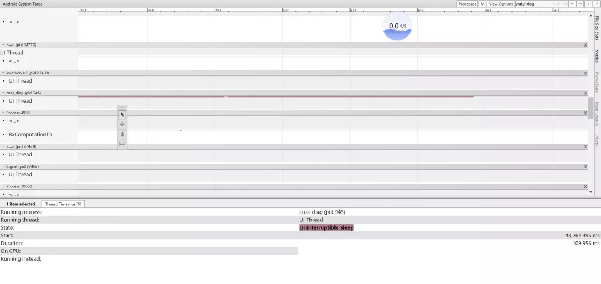
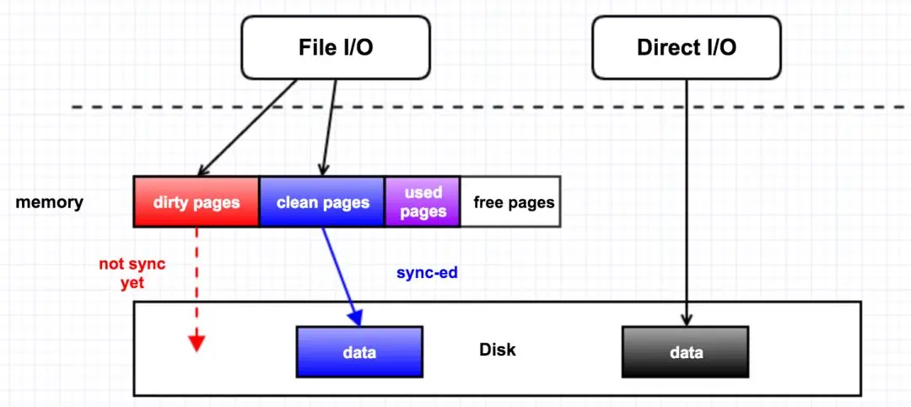
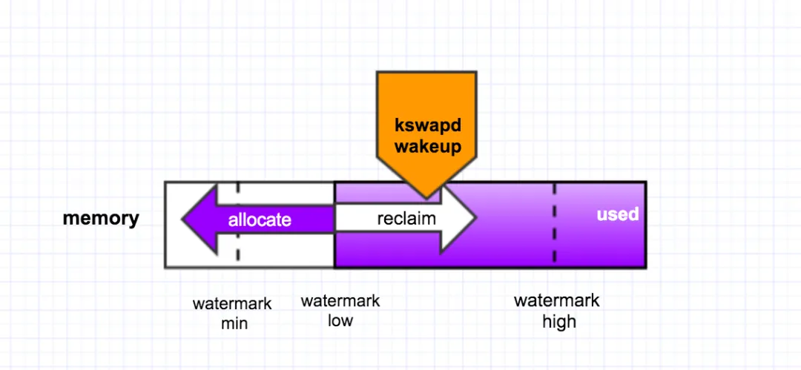
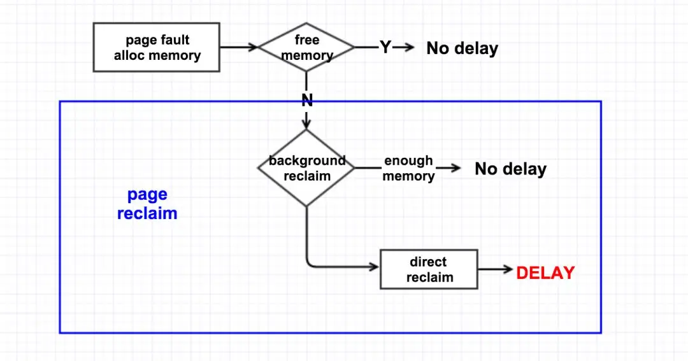
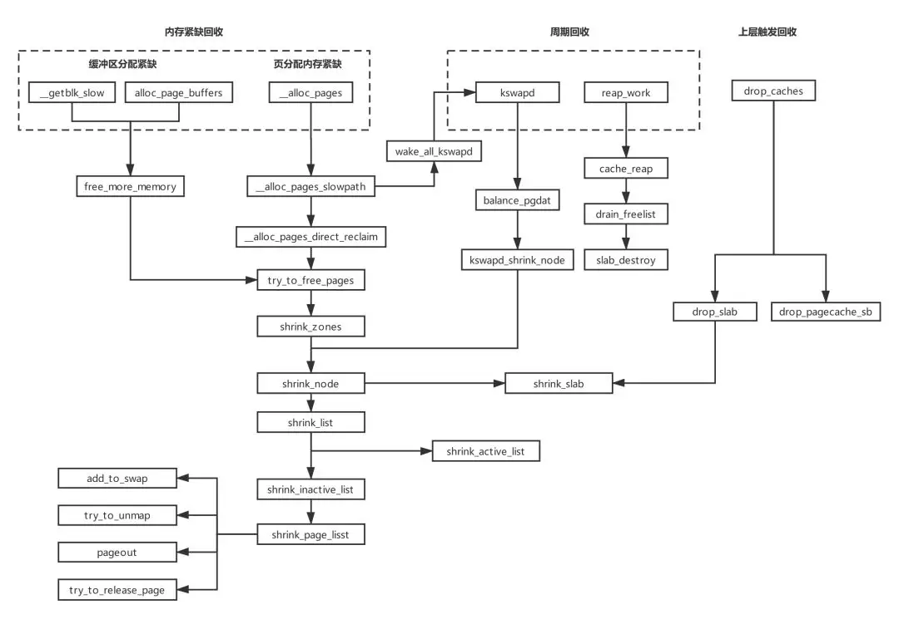
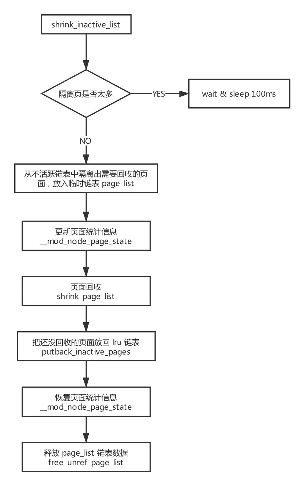
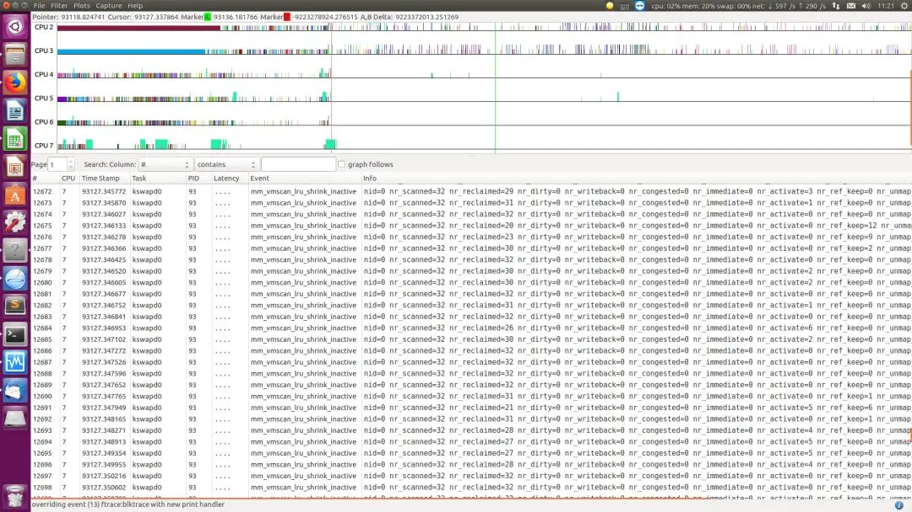
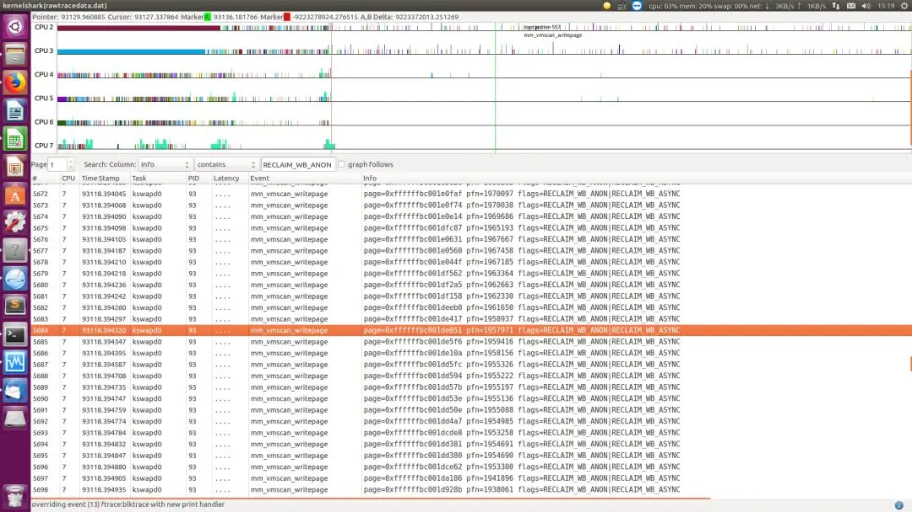
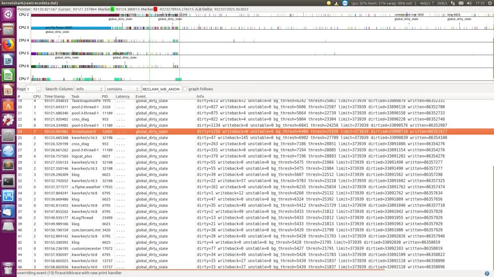

Description
一个项目中偶现几十上百个 D 进程卡住在 shrink_inactive_list，导致卡顿/卡死/android SWT 等问题，前前后后，提交了 3 次修复，还没有彻底解决。
山重水复疑无路
LOG：1
2
3
4
5
6
7
8
9
10
11
12
13
14
15
16
17
18
19
20
21
22
23
24
25
26
27
28
29
30
31
32
33
34
35
36
37
38
39
40
41
42
43
44[149459.897408] [3:2065:watchdog] Binder:1042_16 D 0 9917 635 0x00000008
[149459.897427] [3:2065:watchdog] Call trace:
[149459.897435] [3:2065:watchdog] [<ffffff8bf28852d4>] _switch_to+0xb4/0xc0
[149459.897452] [3:2065:watchdog] [<ffffff8bf3a1f6a0>] _schedule+0x7f0/0xad0
[149459.897468] [3:2065:watchdog] [<ffffff8bf3a1f9f0>] schedule+0x70/0x90
[149459.897485] [3:2065:watchdog] [<ffffff8bf3a23b00>] schedule_timeout+0x548/0x668
[149459.897502] [3:2065:watchdog] [<ffffff8bf2959028>] msleep+0x28/0x38
[149459.897517] [3:2065:watchdog] [<ffffff8bf2a1ff38>] shrink_inactive_list+0x118/0x998
[149459.897534] [3:2065:watchdog] [<ffffff8bf2a1cb10>] shrink_node_memcg+0xa18/0x1100
[149459.897552] [3:2065:watchdog] [<ffffff8bf2a1f0b0>] shrink_node+0x108/0x2f8
[149459.897568] [3:2065:watchdog] [<ffffff8bf2a1bcb0>] do_try_to_free_pages+0x178/0x380
[149459.897586] [3:2065:watchdog] [<ffffff8bf2a1b9d0>] try_to_free_pages+0x370/0x4d8
[149459.897605] [3:2065:watchdog] [<ffffff8bf2a071b8>] _alloc_pages_nodemask+0x868/0x1380
[149459.897623] [3:2065:watchdog] [<ffffff8bf2a13784>] __do_pagecache_readahead+0xbc/0x358
[149459.897640] [3:2065:watchdog] [<ffffff8bf29fde4c>] filemapfault+0x11c/0x600
[149459.897647] [3:2065:watchdog] [<ffffff8bf2b479f8>] ext4_filemap_fault+0x30/0x50
[149459.897664] [3:2065:watchdog] [<ffffff8bf2a47f38>] handle_pte_fault+0xb38/0xfa8
[149459.897681] [3:2065:watchdog] [<ffffff8bf2a485c8>] handle_mm_fault+0x1d0/0x328
[149459.897699] [3:2065:watchdog] [<ffffff8bf28a3668>] do_page_fault+0x2a0/0x3e0
[149459.897716] [3:2065:watchdog] [<ffffff8bf28a3364>] do_translation_fault+0x44/0xa8
[149459.897732] [3:2065:watchdog] [<ffffff8bf2880b74>] do_mem_abort+0x4c/0xd0
[149459.897750] [3:2065:watchdog] [<ffffff8bf2882c78>] el0_da+0x20/0x24
[149459.897767] [3:2065:watchdog] Binder:1042_19 D 0 11188 635 0x00000008
[149459.897786] [3:2065:watchdog] Call trace:
[149459.897797] [3:2065:watchdog] [<ffffff8bf28852d4>] _switch_to+0xb4/0xc0
[149459.897804] [3:2065:watchdog] [<ffffff8bf3a1f6a0>] _schedule+0x7f0/0xad0
[149459.897820] [3:2065:watchdog] [<ffffff8bf3a1f9f0>] schedule+0x70/0x90
[149459.897835] [3:2065:watchdog] [<ffffff8bf3a23b00>] schedule_timeout+0x548/0x668
[149459.897853] [3:2065:watchdog] [<ffffff8bf2959028>] msleep+0x28/0x38
[149459.897868] [3:2065:watchdog] [<ffffff8bf2a1ff38>] shrink_inactive_list+0x118/0x998
[149459.897887] [3:2065:watchdog] [<ffffff8bf2a1cb10>] shrink_node_memcg+0xa18/0x1100
[149459.897904] [3:2065:watchdog] [<ffffff8bf2a1f0b0>] shrink_node+0x108/0x2f8
[149459.897922] [3:2065:watchdog] [<ffffff8bf2a1bcb0>] do_try_to_free_pages+0x178/0x380
[149459.897940] [3:2065:watchdog] [<ffffff8bf2a1b9d0>] try_to_free_pages+0x370/0x4d8
[149459.897957] [3:2065:watchdog] [<ffffff8bf2a071b8>] __alloc_pages_nodemask+0x868/0x1380
[149459.897977] [3:2065:watchdog] [<ffffff8bf2a13784>] _do_page_cache_readahead+0xbc/0x358
[149459.897996] [3:2065:watchdog] [<ffffff8bf29fde4c>] filemap_fault+0x11c/0x600
[149459.898013] [3:2065:watchdog] [<ffffff8bf2b479f8>] ext4_filemap_fault+0x30/0x50
[149459.898031] [3:2065:watchdog] [<ffffff8bf2a47f38>] handle_pte_fault+0xb38/0xfa8
[149459.898048] [3:2065:watchdog] [<ffffff8bf2a485c8>] handle_mm_fault+0x1d0/0x328
[149459.898065] [3:2065:watchdog] [<ffffff8bf28a3668>] do_page_fault+0x2a0/0x3e0
[149459.898083] [3:2065:watchdog] [<ffffff8bf28a3364>] do_translation_fault+0x44/0xa8
[149459.898100] [3:2065:watchdog] [<ffffff8bf2880d18>] do_el0_ia_bp_hardening+0xc0/0x158
[149459.898118] [3:2065:watchdog] [<ffffff8bf2882c98>] el0_ia+0x1c/0x20
现象：大量进程从缺页异常入口，调用内存回收接口：shrink_inactive_list -> msleep ，使得该进程状态变为 D.1
2
3
4
5
6void msleep(unsigned int msecs)
{
unsigned long timeout = msecs_to_jiffies(msecs) + 1;
while (timeout)
timeout = schedule_timeout_uninterruptible(timeout);
}
1 | signed long __sched schedule_timeout_uninterruptible(signed long timeout) |
| D 进程就是被设置了 TASK\_UNINTERRUPTIBLE 进程状态，不可中断的睡眠状态。 |
不可中断，指的并不是 CPU 不响应外部硬件的中断，而是指进程不响应异步信号，信号只会挂到信号队列，而没有机会去立即执行。它不占用 CPU ，也不能被杀掉，很直观的现象就是，kill -9 一个 D 进程，是没有效果的，只有等进程获得资源被唤醒才处理信号，才处理 SIGKILL。
「进程是很有脾气的，不知道你们有没有遇到那种钻牛角尖的人，拿我儿子来举例一下，有时候他想找到他的玩具火箭，就一直在那里闹，一定要我们帮他找到他的玩具火箭位置，其他事情就是不干，你用坦克哄他也不行，哄他看小猪佩奇也不行。D进程也是一样，必须要等有他等到的那个事件为止」
1 |
|
| 初步定位： |
该函数已经有跳出功能，不会一直卡住，最多 2 次就会退出去。说明是大量的进程疯狂地调用 shrink_inactive_list 又被阻塞了一下子，又退出去，又掉进来。
所以，不是一直卡死，而是性能瓶颈拥堵在这个地方，congestion 「拥挤堵车的意思」。
从上层 systrace 也能看到，很有规律的大概 110ms 一段的 D 状态，一个进程甚至可以持续几十秒。

说明隔离页面过多，sleep 100ms，猜测目的是
- 给时间处理隔离页面，回写文件页到磁盘
- 是控制并发，也许另一个 cpu 也在同样的回收流程导致隔离页在时刻变大。
所以初步定了两个方向和疑点：
一是内存回收瓶颈，内存回收不及时，内存需求量巨大，而 LMK 没触发，内存有很多匿名页，都在回收和回写文件页等。
二是 io 读写瓶颈，io 速率慢，某个时间段速率变慢，ufs 频率低，上层读写大量数据，io 占用率过高等。
需要澄清这些疑点。
插播一些背景知识
page cache
导致这个情况的原因是：
进程在申请内存的时候，发现该 zone 的 freelist 上已经没有足够的内存可用，所以不得不去从该 zone 的 LRU 链表里回收 inactive 的page，这种情况就是 direct reclaim（直接回收）。direct reclaim 会比较消耗时间的原因是，如果回收的是 dirty page，就会触发磁盘 IO 的操作，它会首先把 dirty page 里面的内容给回写到磁盘作同步，再去把该 page 给放到 freelist 里。
下图来看下 memory，page cache，Disk I/O 的关系。

举个简单的例子，比如我们 open 一个文件时，如果没有使用 O_DIRECT 这个flag，那就是 File I/O, 所有对磁盘文件的访问都要经过内存，内存会把这部分数据给缓存起来；但是如果使用了 O_DIRECT 这个flag，那就是 Direct I/O, 它会绕过内存而去直接访问磁盘，访问的这部分数据也不会被缓存起来，自然性能上会降低很多。
page reclaim
在直观上，我们有一个认知，我们现在读了一个文件，它会被缓存到内存里面，如果接下来的一个月我们一直都不会再次访问它，而且我们这一个月都不会关闭或者重启机器，那么在这一个月之后该文件就不应该再在内存里头了。
这就是内核对 page cache 的管理策略：LRU（最近最少使用）。即把最近最少使用的 page cache 给回收为 free pages。（页框回收算法 PFRA 远没有这么简单）
内核的页回收机制有两种：后台周期性回收和直接回收。
后台回收是有一个内核线程 kswapd 来做，当内存里 free 的 pages 低于一个水位（page_low）时，就会唤醒该内核线程，然后它从 LRU 链表里回收 page cache 到内存的 free_list 里头，它会一直回收直至 free 的 pages 达到另外一个水位 page_high 才停止. 如下图所示：

直接回收则是，在发生 page fault/alloc memory 时，没有足够可用的内存，于是线程就自己直接去回收内存，它一次性的会回收 32 个 pages。逻辑过程如下图所示：

所以，在内存优化上
- 抬高 watermark 可以间接减少内存回收的并发量，减轻卡在 shrink_inactive_list.
- 提高回收效率，如 LMK 的效率。
然而，还是没彻底解决这个问题，所以我们把疑点再次指向 io。
尝试抓取更多的信息，来了解触发瓶颈的微观过程。
- 跑 monkey 增加 io 使用率、io 读写速度监控，以时间片为 100ms，监控连续 D 状态，并收集 D 进程堆栈信息、内存信息等。
- 打开 ftarce 的 vmscan 和 writeback 两个监控点，apk 监控到持续 D 状态就进dump，从 dump 解析 ftrace，再使用 kernelshark 来观察一些数据。
1 | echo 1 > /sys/kernel/debug/tracing/events/writeback/enable |
为了准备再深入上述的微观过程，需要再补充一些代码和流程图：


注释的代码不贴了，受微信公众号篇幅限制。
ftrace + kernelshark 辅助分析
执行页面回收中页面状态
ftrace 会抓取下面这些信息统计，所以提前了解下。
1 | struct reclaim_stat { |
经过一段时间的老化测试，测试同学终于抓到 log 了。

图中显示 nr_dirty，nr_congested，nr_writeback 几乎都是 0，只有零星 nr_activate 被再访问的页面要添加回 active list.
说明现场不存在 dirty 页面很多，回写 io 遇到瓶颈的情况。这个猜想不成立了。

图中显示在 34 秒内，所有在 pageout() 中的页面，全是 anon 页面，没有 file ?
查看 writeback trace event。

同样，没有很多 writeback 量
从测试结果看到：
- apk 监控到的 io 使用率不高
- 从 ftrace 看到回写量不大
通过最新的数据信息，回到之前的两个大方向：
一是内存紧缺，内存回收不及时，内存需求量大。LMK 没触发，内存有很多匿名页，都在回收和回写文件页等。（抬高水位、加速 LMK 触发，还有复现，不能彻底解决）二是 io 速率慢，某个时间段速率变慢，ufs 频率低，上层读写大量数据，io 占用率过高等。（数据证明，io 量不多，没有瓶颈）
那么，之前的两个方向猜想，都落空了。那会是什么意想不到的原因？那回去看看卡住的代码，too_many_isolated 代码。
1 | static int __too_many_isolated(struct pglist_data *pgdat, int file, |
没有很复杂的逻辑，只有简单的 isolated 和 inactive 统计计数比较。所以，只能是更直接的猜想：isolated file 统计一直偏大，导致一直判断 too_many_isolated 为真，卡在 shrink_inactive_list。
根据这个猜想，从 log 中打印的 mem info，也看到 isolated file 一直偏大，一直在增加，不会减少。好像印证了猜想似的。
LOG：1
2
3
4
5
6
7
8
9
10
11
12
13
14
15
16
17
18
19
20
21
22
23
24
25
26
27
28
29
30
31
32
33
34
35
36
37<6>[95299.607369] isolated(anon):0kB isolated(file):37880kB
<6>[95318.568833] isolated(anon):0kB isolated(file):37752kB
<6>[95323.773350] isolated(anon):0kB isolated(file):37752kB
<6>[97520.184804] isolated(anon):0kB isolated(file):44604kB
<6>[97525.658037] isolated(anon):0kB isolated(file):44604kB
<6>[97754.256431] isolated(anon):0kB isolated(file):44604kB
<6>[97759.418172] isolated(anon):0kB isolated(file):44604kB
<6>[97764.574908] isolated(anon):0kB isolated(file):44604kB
<6>[97769.735128] isolated(anon):0kB isolated(file):44604kB
<6>[98543.638667] isolated(anon):0kB isolated(file):44684kB
<6>[98548.905397] isolated(anon):0kB isolated(file):44684kB
<6>[98554.209671] isolated(anon):0kB isolated(file):44684kB
<6>[99996.798031] isolated(anon):0kB isolated(file):51572kB
<6>[100002.122853] isolated(anon):0kB isolated(file):51572kB
<6>[100007.359023] isolated(anon):0kB isolated(file):51572kB
<6>[100146.079882] isolated(anon):0kB isolated(file):51700kB
<6>[100151.313065] isolated(anon):0kB isolated(file):51572kB
<6>[100156.587622] isolated(anon):0kB isolated(file):51572kB
<6>[100328.483071] isolated(anon):0kB isolated(file):51700kB
<6>[100520.245217] isolated(anon):0kB isolated(file):51572kB
<6>[100550.688429] isolated(anon):0kB isolated(file):51572kB
<6>[100555.913634] isolated(anon):0kB isolated(file):51572kB
<6>[100669.226582] isolated(anon):0kB isolated(file):51572kB
<6>[100935.069661] isolated(anon):0kB isolated(file):51688kB
<6>[100940.240279] isolated(anon):0kB isolated(file):51572kB
<6>[100945.476071] isolated(anon):0kB isolated(file):51828kB
<6>[103104.120921] isolated(anon):0kB isolated(file):53344kB
<6>[103121.900214] isolated(anon):0kB isolated(file):53344kB
<6>[103481.197823] isolated(anon):0kB isolated(file):53412kB
<6>[103486.555528] isolated(anon):0kB isolated(file):53412kB
<6>[103721.346234] isolated(anon):0kB isolated(file):53412kB
<6>[103726.655700] isolated(anon):0kB isolated(file):53540kB
<6>[103731.961321] isolated(anon):0kB isolated(file):53540kB
<6>[103737.236295] isolated(anon):0kB isolated(file):53540kB
<6>[103742.470632] isolated(anon):0kB isolated(file):53412kB
<6>[103747.661019] isolated(anon):0kB isolated(file):53284kB
<6>[103752.973978] isolated(anon):0kB isolated(file):53412kB
柳暗花明又一村
对 NR_ISOLATED_FILE/NR_ISOLATED_ANON 的统计增减主要分布在 vmscan.c migrate.c，和 PPR (高通进程内存回收)模块。理论上内核 vmscan.c（成双成对） migrate.c 都不会有问题，高通 PPR 模块插入在 vmscan. c 和 task_mmu.c 里，而我们 IMS 没有直接使用高通 PPR，嫌疑最大。于是，在上游确实找到了个相关的 patch。
这个 patch 正是修复了 isolated count mismatch 的问题，导致一直让 isolated file 增大。
1 | MADV_FREE clears pte dirty bit and then marks the page lazyfree (clear |
1 | MADV_FREE (since Linux 4.5) |
1 | madvise(2) is a system call used by processes to tell the kernel how they are going to use their memory, allowing the kernel to optimize the memory management according to these hints to achieve better overall performance. |
madvise[1] 系统调用，会建议内核，在从 addr 指定的地址开始，长度等于 len 参数值的范围内，该区域的用户虚拟内存应遵循特定的使用模式，使内核可以选择适当的预读和缓存技术。如果使用 madvise() 函数的程序明确了解其内存访问模式，则使用此函数可以提高系统性能。
自 4.5 开始，引入 MADV_FREE 参数「这是为什么 4.9 内核才出现该问题，这需要上层和底层同时支持，才会出现本问题」。简单来说，MADV_FREE 就是让上层设置一段内存可以释放内存的标志，但是底层并不会立即释放，以便让上层可以在短时间内重复访问，以免增加缺页异常等性能开销。也叫 lazy free，它只能用于匿名页面。
根据描述，触发 isolated file 统计增大的路径是：「代码省略不贴」
- 上层调用 madvise 系统调用，使用 MADV_FREE 时，清除 dirty bit 和 SwapBacked bit，把 lazyfree page 加入 inactive file list。
- PPR 增加 ISOLATE_FILES 计数（SwapBacked=0），隔离页面并触发回收
- 上层访问 lazyfreed 页面，dirty=1
- PPR 执行 reclaim_pte_range -> reclaim_pages_from_list -> shrink_page_list ->try_to_unmap -> try_to_unmap_one 设置 SwapBacked=1, 并跳出回收
- PPR 继续执行 reclaim_pte_range -> reclaim_pages_from_list，putback_lru_page 的时候，因为 SwapBacked=1，减少了 NR_ISOLATED_ANON 计数，而不是减少当初增加的 NR_ISOLATED_FILE 计数。
- 导致 NR_ISOLATED_FILE 一直被增加
所以，需要在 PPR 中过滤 lazyfree 页面，避免这个 NR_ISOLATED_FILE 计数异常，导致的卡 too_many_isolated。
匿名页面一开始就会设置 SwapBacked=1, 并且只有在上层设置 lazyfree 页面时才会清除 ClearPageSwapBacked(page) ，没别的地方了。所以，PageAnon(page) && !PageSwapBacked(page) 能指示这是 lazyfree 页面。
ok，已经理清了前因后果。再退一步，试想下，假如上游没有修复这个 patch。我们能不能想出来？我觉得很难，因为我们缺乏 madvise 的相关认识，并且它经过了 dirty, SwapBacked 标志的变化（好像几乎没办法做这么微观的页面标志追踪？），才导致 NR_ISOLATED_ANON/FLIE 的变化。
References
[1] madvise: _http://www.man7.org/linux/man-pages/man2/madvise.2.html_
This is copyright.